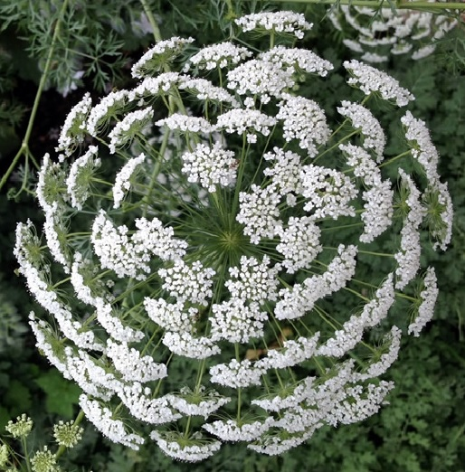

Adenium
Adenium merupakan salah satu tanaman hias bunga indah nan menawan, jika dilihat sekilas nampak menyerupai lukisan hidup. Tanaman ini mempunyai banyak sekali varian bunga yang di tiap variannya memiliki warna-corak maupun bentuk yang khas. Anda bisa melihat koleksi benih adenium di sini.Agapanthus
Bunga cantik yang satu ini termasuk tanaman bunga dalam keluarga Amaryllidaceae. Agapanthus memiliki bunga berbentuk corong dengan gradasi warna biru ke ungu, tumbuh bergerombol sehingga terlihat sangat menawan.
Alamanda
Alamanda populer dijadikan tanaman hias karena bunganya yang besar dan berwarna-warni. Tanaman ini dikenal pula sebagai golden trumpet karena bentuknya yang menyerupai terompet. Selain kuning, terdapat pula warna lain yang tidak kalah menariknya.Ageratum
Tanaman yang memiliki nama Ilmiah Ageratum houstonianum ini adalah tanaman berbunga dari Amerika Tengah dan Meksiko. Bunganya menyerupai bonggol-bonggol dengan bulu-bulu halus berwarna lavender. Memandang bunga ini mengingatkan kita pada suasana pagi yang segar.
Amarilis
Amarilis memang pantas masuk dalam kategori bunga yang populer karena keindahannya. Tanaman ini menghasilkan umbi yang dapat ditanam kembali. Karena memiliki tangkai yang panjang sehingga sangat cocok dijadikan bunga potong.Angelonia
Tanaman angelonia selain terkenal karena bunganya yang cantik, juga dikenal karena memiliki aroma harum ketika diterpa angin. Wanginya yang semerbak dapat memberikan suasana sejuk yang menenangkan.Amaranth
Amaranth terkenal karena bunganya yang unik, berukuran panjang dan menjuntai kebawah. Tanaman ini menhasilkan warna lain seperti merah,ungu bahkan hijau. Perawatannya sangat mudah dan cepat tumbuhnya. Sangat cantik ditanam di pekarangn rumah maupun dalam pot gantung.
